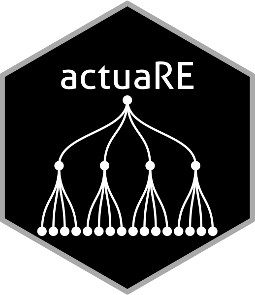

actuaRE.Rmd
In this document, we give you a brief overview of
the basic functionality of the actuaRE package. For a more
detailed overview of the functions, you can consult the help-pages.
Please feel free to send any suggestions and bug reports to the package
author.
Multi-level factors (MLFs) are nominal variables with too many levels for ordinary generalized linear model (GLM) estimation (Ohlsson and Johansson 2010). Within the machine learning literature, these type of risk factors are better known as high-cardinality attributes (Micci-Barreca 2001). This package focuses on MLFs that exhibit a hierarchical structure and a typical example hereof, within workers’ compensation insurance, is the NACE code. In our illustration, we work with a hierarchical MLF that has two hierarchical levels: industry and branch. Figure 1 visualizes this hierarchical structure with a hypothetical example.
Figure 1: Hierarchical structure of a hypothetical example
With the current version of the actuaRE package, you are
able to fit random effects models with the following functional form
Here, denotes the loss cost of risk profile (based on the company-specific risk factors) operating in branch within industry at time . We calculate the loss cost as
where denotes the total claim cost and is an appropriate volume measure. denotes the link function (for example the identity or log link), the intercept, the company-specific covariate vector and the corresponding parameter vector. With the model parameters and we capture the company-specific effects. To assess the effect of the hierarchical MLF, we introduce the random effects and which capture the unobservable effects of the industry and the branch in which the company operates. denotes the industry-specific deviation from and denotes the branch-specific deviation from . We assume that the random industry effects are independent and identically distributed (i.i.d.) with and . Similarly, the random branch effects are assumed to be i.i.d. with and .
This package offers three different estimation methods to estimate
the model parameters:
- Hierarchical credibility model (Jewell 1975)
- Combining the
hierarchical credibility model with a GLM (Ohlsson 2008)
- Mixed models (Molenberghs and Verbeke 2005)
To illustrate the functions, we make use of two different data sets.
We illustrate the hierarchical credibility model of Jewell (Jewell 1975) using the Hachemeister (Hachemeister 1975) data set. The other
functions make use of the dataCar data set.
To estimate the parameters using the hierarchical credibility model,
we use the function hierCredibility. By default, the
additive hierarchical credibility model (Dannenburg, Kaas, and Goovaerts 1996) is
fit
capture.output(library(actuaRE), file = tempfile()) # suppress startup message
#> Loading required package: cplm
#> Loading required package: coda
#> Loading required package: Matrix
#> Loading required package: splines
#>
#> Package 'actuaRE' version 0.1.6
#>
#> This is version 0.1.6 of actuaRE
data("hachemeisterLong")
fitHC = hierCredibility(ratio, weight, cohort, state, hachemeisterLong)
fitHC
#> Call:
#> hierCredibility(Yijkt = ratio, wijkt = weight, sector = cohort,
#> group = state, data = hachemeisterLong)
#>
#>
#> Additive hierarchical credibility model
#>
#> Estimated variance parameters:
#> Individual contracts: 139120026
#> Var(V[jk]): 11628.45
#> Var(V[j]): 88476.11
#> Unique number of categories of cohort: 2
#> Unique number of categories of state: 5To fit the multiplicative hierarchical credibility model (Ohlsson 2005)
you have to specify
type = "multiplicative".
fitHCMult = hierCredibility(ratio, weight, cohort, state, hachemeisterLong, type = "multiplicative")
fitHCMultTo get a summary of the model fit, we use the summary
function.
summary(fitHC)
#> Call:
#> hierCredibility(Yijkt = ratio, wijkt = weight, sector = cohort,
#> group = state, data = hachemeisterLong)
#>
#>
#> Additive hierarchical credibility model
#>
#> Estimated variance parameters:
#> Individual contracts: 139120026
#> Var(V[jk]): 11628.45
#> Var(V[j]): 88476.11
#> Unique number of categories of cohort: 2
#> Unique number of categories of state: 5
#>
#> Estimates at the cohort level:
#>
#> Key: <cohort>
#> cohort zj Yjz_BarTilde qj Vj Uj
#> <num> <num> <num> <num> <num> <num>
#> 1: 1 1.427755 1965.436 0.9157058 1946.859 201.8044
#> 2: 2 1.633248 1527.011 0.9255216 1543.250 -201.8044
#>
#> Estimates at the state level:
#>
#> Key: <cohort, state>
#> cohort state wjk Yjk_BarTilde zjk Vjk Ujk
#> <num> <num> <num> <num> <num> <num> <num>
#> 1: 1 1 100155 2060.921 0.8932938 2048.750 101.89107
#> 2: 1 3 13735 1805.843 0.5344614 1871.491 -75.36785
#> 3: 2 2 19895 1511.224 0.6244749 1523.251 -19.99963
#> 4: 2 4 4152 1352.976 0.2576359 1494.229 -49.02155
#> 5: 2 5 36110 1599.829 0.7511373 1585.748 42.49796To obtain the fitted values, we use the fitted
function
fitted(fitHC)
#> [1] 2048.750 2048.750 2048.750 2048.750 2048.750 2048.750 2048.750 2048.750
#> [9] 2048.750 2048.750 2048.750 2048.750 1871.491 1871.491 1871.491 1871.491
#> [17] 1871.491 1871.491 1871.491 1871.491 1871.491 1871.491 1871.491 1871.491
#> [25] 1523.251 1523.251 1523.251 1523.251 1523.251 1523.251 1523.251 1523.251
#> [33] 1523.251 1523.251 1523.251 1523.251 1494.229 1494.229 1494.229 1494.229
#> [41] 1494.229 1494.229 1494.229 1494.229 1494.229 1494.229 1494.229 1494.229
#> [49] 1585.748 1585.748 1585.748 1585.748 1585.748 1585.748 1585.748 1585.748
#> [57] 1585.748 1585.748 1585.748 1585.748and we use ranef to extract the estimated random
effects.
ranef(fitHC)
#> $sector
#> Key: <cohort>
#> cohort Uj
#> <num> <num>
#> 1: 1 201.8044
#> 2: 2 -201.8044
#>
#> $group
#> Key: <cohort, state>
#> cohort state Ujk
#> <num> <num> <num>
#> 1: 1 1 101.89107
#> 2: 1 3 -75.36785
#> 3: 2 2 -19.99963
#> 4: 2 4 -49.02155
#> 5: 2 5 42.49796We can inspect the estimated random effects using the function
plotRE.
ggPlots = plotRE(fitHC, plot = FALSE)
ggPlots[[1]]
ggPlots[[2]]To obtain predictions for a new data frame, we use the
predict function.
To allow for company-specific risk factors, we extend the
multiplicative hierarchical credibility model to
where
denotes the effect of the company-specific covariates. To estimate this
model using Ohlsson’s GLMC algorithm (Ohlsson
2008), we use can either use the function
hierCredGLM or hierCredTweedie.
hierCredGLM allows the user to specify the power parameter
.
Conversely, hierCredTweedie estimates the power parameter
along with the other parameters using the cpglm function
from the cplm package.
data("tweedietraindata")
fit = hierCredGLM(y ~ x1 + (1 | cluster / subcluster), tweedietraindata, weights = wt)
summary(fit)
#> Call:
#> hierCredGLM(formula = y ~ x1 + (1 | cluster/subcluster), data = tweedietraindata,
#> weights = wt)
#>
#>
#> Combination of the hierarchical credibility model with a GLM
#>
#> Estimated variance parameters:
#> Individual contracts: 28.85133
#> Var(V[jk]): 10.07228
#> Var(V[j]): 15.34966
#> Unique number of categories of cluster: 5
#> Unique number of categories of subcluster: 25
#>
#> Results contract-specific risk factors:
#>
#>
#> Call:
#> glm(formula = FormulaGLM, family = tweedie(var.power = p, link.power = 0),
#> data = data, weights = data$wijkt, model = T, y = T)
#>
#> Coefficients:
#> Estimate Std. Error t value Pr(>|t|)
#> (Intercept) 1.16305 0.04311 26.980 < 2e-16 ***
#> x1 -0.24828 0.04363 -5.691 1.57e-08 ***
#> ---
#> Signif. codes: 0 '***' 0.001 '**' 0.01 '*' 0.05 '.' 0.1 ' ' 1
#>
#> (Dispersion parameter for Tweedie family taken to be 1.792246)
#>
#> Null deviance: 1768.4 on 1249 degrees of freedom
#> Residual deviance: 1712.0 on 1248 degrees of freedom
#> AIC: NA
#>
#> Number of Fisher Scoring iterations: 4We use the same syntax as used by the package lme4 to
specify the model formula. Here,
(1 | VehicleType / VehicleBody) specifies a random effect
for VehicleType and a nested random effect
for VehicleBody. We extract the estimated parameters using
fixef (company-specific effects) and ranef
(random effects).
fixef(fit)
#> (Intercept) x1
#> 1.1630511 -0.2482805
ranef(fit)
#> $sector
#> Key: <cluster>
#> cluster Uj
#> <int> <num>
#> 1: 1 0.4386663
#> 2: 2 1.0456717
#> 3: 3 0.3876805
#> 4: 4 3.1619372
#> 5: 5 0.8244171
#>
#> $group
#> Key: <cluster, subcluster>
#> cluster subcluster Ujk
#> <int> <num> <num>
#> 1: 1 1 0.1848503
#> 2: 1 2 0.7644592
#> 3: 1 3 1.8658027
#> 4: 1 4 0.9610158
#> 5: 1 5 0.3841878
#> 6: 2 6 2.6271707
#> 7: 2 7 0.9485389
#> 8: 2 8 0.4156788
#> 9: 2 9 0.2814473
#> 10: 2 10 0.7558246
#> 11: 3 11 0.1849783
#> 12: 3 12 0.2949253
#> 13: 3 13 1.4783879
#> 14: 3 14 1.1272440
#> 15: 3 15 0.8780507
#> 16: 4 16 1.2055058
#> 17: 4 17 1.7166514
#> 18: 4 18 0.7795430
#> 19: 4 19 0.2942586
#> 20: 4 20 1.4527028
#> 21: 5 21 1.3115036
#> 22: 5 22 0.7205374
#> 23: 5 23 0.1888783
#> 24: 5 24 0.7047146
#> 25: 5 25 1.9346121
#> cluster subcluster UjkIn addition, the same functions as before can be used.
Alternatively, we can rely on the mixed models framework (Molenberghs and Verbeke 2005) to estimate the
model parameters. Here, we can use the function to estimate a Tweedie
generalized linear mixed model. Fitting the model, however, takes quite
some time. We can speed up the fitting process by providing some initial
estimates and this is exactly what the tweedieGLMM function
does! Nonetheless, even with the initial estimates the fitting process
does take some time (approximately 5 minutes using Windows 10 with an
intel i7 and 32 gigabytes of RAM).
fitGLMM = tweedieGLMM(y ~ x1 + (1 | cluster / subcluster), tweedietraindata, weights = wt, verbose = TRUE)For insurance applications, it is crucial that the models provide us a reasonable premium volume at portfolio level. Hereto, we examine the balance property [Bühlmann and Gisler (2006)](Wüthrich 2020) on the training set. That is, where serves as an index for the tariff class. GLMs fulfill the balance property when we use the canonical link (see (Wüthrich 2020)). For LMMs and hence, the hierarchical credibility model this property also holds. Conversely, most GLMMs do not have this property. To regain the balance property, we introduce a quantity which quantifies the deviation of the total predicted damage from the total observed damage. In case of the log link, we can then use to update the intercept to to regain the balance property.
By default, the intercept is updated when fitting models using
hierCredGLM, hierCredTweedie and
tweedieGLMM. If you do not wish to update the intercept,
you can set the argument balanceProperty = FALSE.
fitnoBP = hierCredGLM(y ~ x1 + (1 | cluster / subcluster), tweedietraindata, weights = wt, balanceProperty = F)
yHatnoBP = fitted(fitnoBP)
w = weights(fitnoBP, "prior")
y = fitnoBP$y
fitBP = hierCredGLM(y ~ x1 + (1 | cluster / subcluster), tweedietraindata, weights = wt, balanceProperty = T)
yHatBP = fitted(fitBP)
sum(w * y) / sum(w * yHatnoBP)
#> [1] 1.040507
sum(w * y) / sum(w * yHatBP)
#> [1] 1Alternatively, you can use the build-in function
BalanceProperty. You can use this function with any object
that has the slots fitted, weights and
y.
BalanceProperty(fitnoBP)
#> Warning in BalanceProperty(fitnoBP):
#> Balance property is not satisfied.
#>
#> Ratio total observed damage to total predicted damage: 1.040507
BalanceProperty(fitBP)
#>
#> Balance property is satisfied.